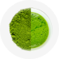

ИНТЕРНЕТ-МАГАЗИН ЯПОНСКОГО ЧАЯ И МАТЧА ORIGAMI
Здесь самые вкусные премиальные японские чаи и матча. 100 % натуральные, свежие, а значит, полезные.
@@include('./html/main-btn.html', {"text":"Купить матча","class":""})ИНТЕРНЕТ-МАГАЗИН ЯПОНСКОГО ЧАЯ И МАТЧА ORIGAMI
Здесь самые вкусные премиальные японские чаи и матча. 100 % натуральные, свежие, а значит, полезные.
@@include('./html/main-btn.html', {"text":"Купить матча","class":""})ИНТЕРНЕТ-МАГАЗИН ЯПОНСКОГО ЧАЯ И МАТЧА ORIGAMI
Здесь самые вкусные премиальные японские чаи и матча. 100 % натуральные, свежие, а значит, полезные.
@@include('./html/main-btn.html', {"text":"Купить матча","class":""})японский чай и матча – лучшая альтернатива кофе
 Основатель компании —
Основатель компании —
чайный эксперт с 19-летним опытом
Виталий Романов
- 15+
- 25+
- 50+
- 19
- 40+
- 30
- 7
- 300
Японский чай матча –
уникальный напиток
Бодрит, расслабляет и оздоравливает одновременно
- дарит энергию и выносливость
- стимулирует память и внимание
- даёт расслабление и радость
- повышает концентрацию внимания

- настраивает иммунную систему
- нормализует уровень сахара в крови
- снижает уровень холестерина
- ускоряет метаболизм
- помогает сжигать жиры
- очищает организм
Что такое матча?
В Японии Виталий
выяснил ...
Во второй половине 12 века дзен-буддийский монах Эйсай привёз матча в Японию. Этот напиток помогал монахам сконцентрироваться во время медитаций.
Только в Японии
Соблюдают технологию, отточенную веками
- За три недели до сбора урожая затеняют кусты
- Собирают верхние листочки
- Сырьё пропаривают после сбора, очищают от прожилок и упаковывают для хранения
- Перед продажей перетирают на каменных жерновах до состояния пудры

Сохраняют натуральный вкус, цвет и пользу чая
300 биологически активных компонентов «запечатано» в каждом листочке
-
Настоящий чай матча:
- Вкус – благородный, сливочный с оттенками лесных ягод, цветов и фруктов
- Аромат – шоколада, печенья, бисквита, фруктов, цветов и орехов
- Цвет – яркий, изумрудно-зелёный

Секреты транспортировки, хранения и упаковки японского чая и матча
Только в ORIGAMI делают всё, чтобы чай был действительно свежим, а, значит, полезным и вкусным
Чем полезен чай матча?
01 Кофеин
Тонизирующее средство

- Повышает уровень энергии
- Даёт бодрость
- Улучшает работу мозга
- Повышает работоспособность
- Способствует похудению
 + Танины
+ Танины
02Катехины
Мощные антиоксиданты

- Очищают организм
- Выводят свободные радикалы
- Улучшают пищеварение
- Контролируют уровень сахара и холестерина
- Укрепляют иммунитет
- Замедляют старение
- Омолаживают кожу
03L-теанин
Нейромедиатор
- Способствует выработке дофамина и серотонина
- Снимает стресс
- Повышает работоспособность
- Расслабляет
- Укрепляет иммунитет
Суперфуд для наполненной жизни со вкусом и заботой о себе
1 чашка матча
=
10 чашек зелёного чая
ЧАЙ
6 причин заменить кофе на матча

Во-первых... Это вкусно
Во-вторых:
- Кофе возбуждает – матча тонизирует
- Кофе даёт бодрость на 2 часа, а потом происходит резкий спад энергии, матча даёт концентрацию, сосредоточенность и ясность ума на 4-6 часов
Также ученые доказали:
- Молекула танина соединяется с молекулой кофеина и замедляет выброс кофеина в организм
- L-теанин расслабляет и смягчает действие кофеина
- Кофе воздействует на нервную систему, матча влияет на коронарное кровообращение
Матча – альтернатива кофе с заботой о себе
@@include('./html/main-btn.html', {"text":"Каталог матча","class":"_section-btn"})Как приготовить матча латте и эспрессо?
Утренний матча-латте для бодрости
Даёт энергию и уравновешенное состояние для повседневных дел
Не церемоньтесь, просто сделайте - из премиального и стандартного грейда матча
- На 1 порцию возьмите 1-2 грамма чая матча
-
 Залейте кипячёной и остуженной до 70-80 ºС водой 30-40 мл
Залейте кипячёной и остуженной до 70-80 ºС водой 30-40 мл
-
 Взбейте венчиком или ручным вспенивателем молока до исчезновения
комочков
Взбейте венчиком или ручным вспенивателем молока до исчезновения
комочков
- Нагрейте и вспеньте молоко 200-250 мл, добавьте молоко к матча. Наслаждайтесь
Утренний матча-эспрессо для бодрости
Даёт энергию и уравновешенное состояние для повседневных дел
Не церемоньтесь, просто сделайте - из премиального и стандартного грейда матча
- На 1 порцию возьмите 1-2 грамма чая матча
-
Залейте кипячёной и остуженной до 70-80 ºС водой 30-40 мл
-
Взбейте венчиком или ручным вспенивателем молока до исчезновения
комочков
- Нагрейте и вспеньте молоко 200-250 мл, добавьте молоко к матча. Наслаждайтесь
Наша миссия – сделать премиальный японский чай доступным
Работаем с множеством поставщиков, выбирая лучшие чаи и учитывая вопрос цены
@@include('./html/main-btn.html', {"text":"Перейти в каталог","class":"_white"})Мы разобрались в грейдах японского чая матча
|
Церемониальный |
Премиальный |
Стандартный |
|
|
Вкус |
Нежный, сладковатый вкус, насыщен ягодными, шоколадными, цветочными оттенками вкуса, терпкость минимальная |
Мягкий, сливочный вкус, средне насыщен с цветочными, ягодными, шоколадными оттенками, терпкость средняя 
|
Терпкость присутствует, насыщенный вкус и аромат зелёного чая |
|
Состав |
L-теанин Кофеин | L-теанин Кофеин | Катехины Кофеин |
|
Польза |
Концентрация внимания, |
Концентрация внимания, |
Бодрость, тонус, |
Хотите бодрость
Выбирайте стандарт
Хотите бодрость и концентрацию
Выбирайте премиальный
Хотите сконцентрироваться
Выбирайте церемониальный
Как определить качество и свежесть матча?
6
Секретов определения качества и свежести матча
от Виталия Романова
-
Помол пудры
-
Цвет порошка
-
Цвет напитка
-
Аромат
-
Вкус
-
Упаковка
Как усилить эффект от чая матча?
Японские листовые чаи тонизируют утром, расслабляют вечером
-

Матча пудровый Бодрит, тонизирует, улучшает работу мозга, улучшает настроение, снимает стресс
-
Сенча Освежает, бодрит, тонизирует снимает стресс, повышает иммунитет
-
Гёкуро Чай гениев, тонизирует, улучшает работу мозга, улучшает настроение, снимает стресс
-
Кабусеча Тонизирует, улучшает работоспасобность и настроенние, симает стресс
-
Кокейча Освежает, бодрит, тонизирует, повышает иммунитет Витамин С
Витамин С -
Кукича Ощелачивает, успокаивает, улучшает работу мозга, улучшает настроение
-
Генмайча Способствует похудению, насыщает минералами и витаминами, улучшает пищеварение,
-
Банча Освежает, насыщает минералами и витаминами, повышает иммунитет
Витамин С -
Ходзича листовой Улучшает пищеварение, расслабляет
-
Ходзича пудровый Улучшает пищеварение, насыщает витаминами, замена кофе по вкусу
Нас Часто спрашивают
Виталий Романов Основатель ORIGAMI TEA